Getting started¶
In this guide, we give you a walkthrough to understand the basic operations of BDP. After you have installed BD-Processor (BDP) and registered the first account as the system root. You see the page shown as the following figure.
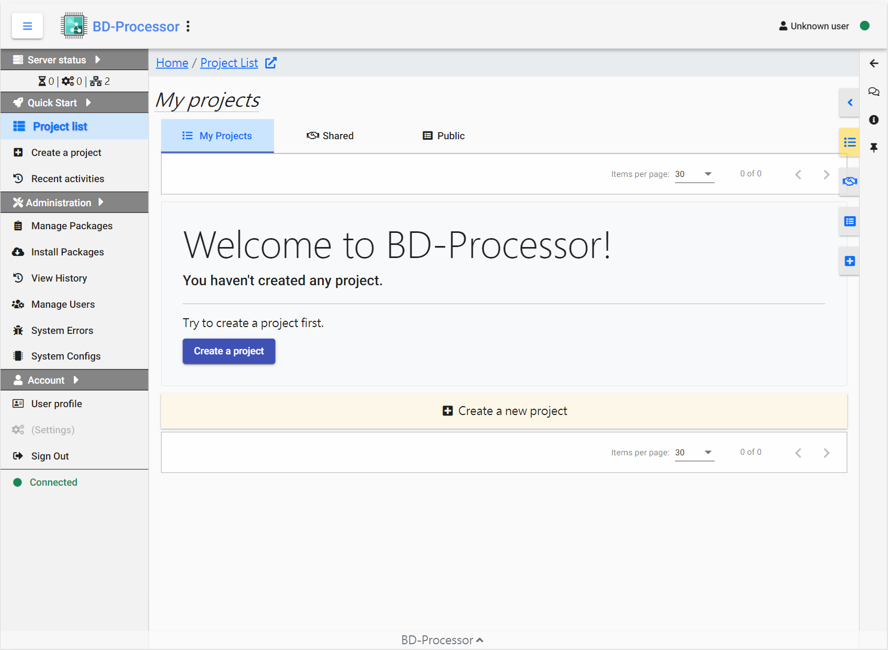{kind=link}
See also
For more information about the ui layout, please see Basic UI layout. Most of the actions can be accessed via the left navigation panel. This panel may be hided for small screen and you can toggle it by click the top-left button.
Let’s start by setting your display name.
1. Set your display name¶
Click the “User profile” link on the left navigation button, the user profile page shows your information. Click the pencil icon to edit your display name. Remember to click the save icon.
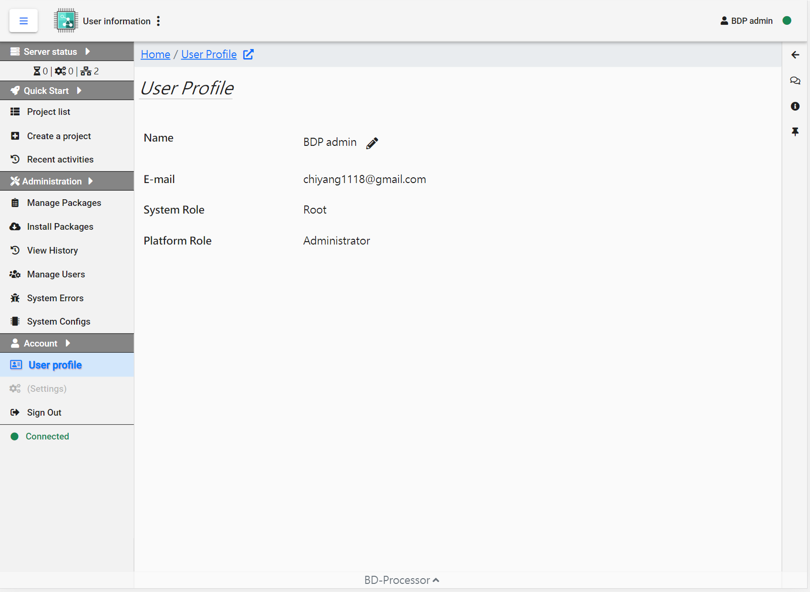{kind=link}
2. Configure the system modules¶
BDP provides web pages for users to manage required system modules such as task adapters or custom filter functions. The first step is to make sure that these modules are up to date after setting up BDP and registering the first account.
Click the System Configs link on the left navigation panel to view the system configuation page. As shown in the following figure, you may click the pre-installed adapters, such as the @big-data-processor/task-adapter-docker and the @big-data-processor/task-adpater-local., to expand detailed information.
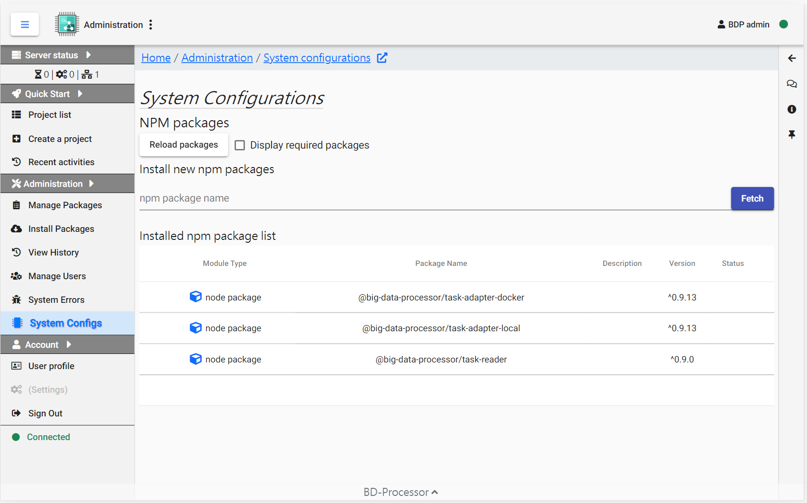{kind=link}
These adapters were published on the npm (node package manager). Click the “Check Update” button in the expanded details to check if there are newer version published. After updating these adapters, you may see the following figure.
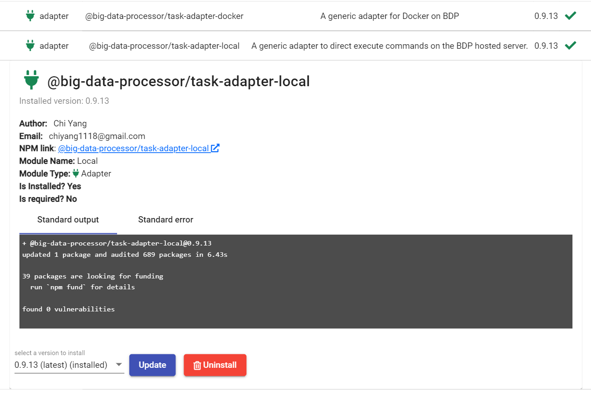{kind=link}
Note
In this page, you could install additional task adapters for BDP to consume various computing resources (including cloud computing).
3. Install a package¶
After we have configured/updated these task adapters, we can then install packages by clicking the Install Packages link on the left navigation panel. We have provided a demo package list that were published on the Google Sheet with the id 1sUQT7dUrQfjqXVC-AmhmQzt8OiJCCvDqwCf1APysK0g. As shown in the following figure, this package list contains only three packages: a-demo-package-demo.1, bdp-development-kit-demo.1, and bdp-mirna-profiler-0.3.1.
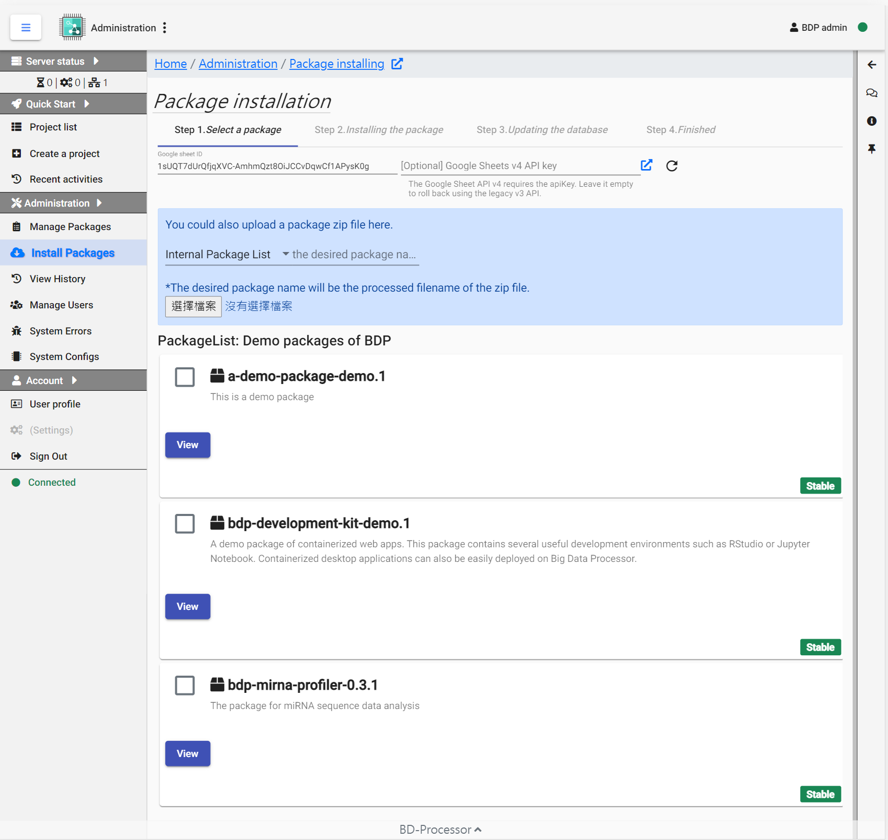{kind=link}
Every developer can currently publish his/her package list on Google Sheet. By giving the sheet id, BDP server downloads the metadata and users can install those packages by just mouse clicking. In a future release, package lists can also be published via Github or Githlab. The package format is a portable zip file and can also be directly uploaded and installed via this page.
In this getting-started guide, we install bdp-development-kit-demo.1 by clicking a series of buttons. First, click the View and then the Add the package button to select one package to install. Click the Run install button to download and extract the package zip file. Then, click the Next button and proceed by click the Import tasks button. Finally, we click the View installed packages to see what we just installed as shown in the following figure.
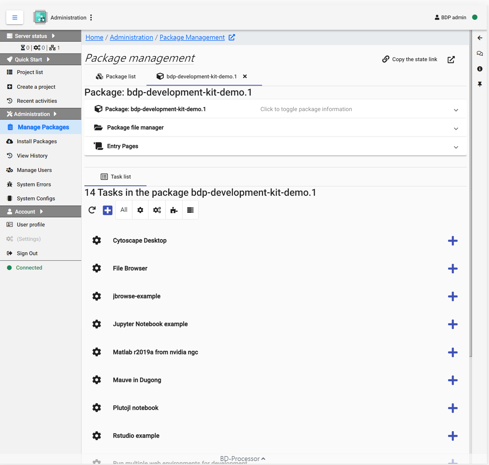{kind=link}
This Package management page contains all installed packages and can be accessed by clicking the Manage Packages link on the left navigation panel. Since we just installed the bdp-development-kit-demo.1 package, this package is pre-selected. From top to bottom, this package page contains several sections: 1) package information, 2) package files, 3) entry page settings, and 4) tasks of this package. You may click these sections to expand details such as task definitions, package files, or runtime settings. Everything modified in this package takes effect immediately. This is handy when defining tasks or testing workflows.
It is worth noting that tasks of installed packages cannot be run directly. We MUST create a Project and assign required packages in this package. Then, these tasks of selected packages can be selected to run.
Now, let’s create our first project.
4. Create the First Project¶
By clicking the Create a Project link on the left navigation panel, we can see a project creation page as the following figure.
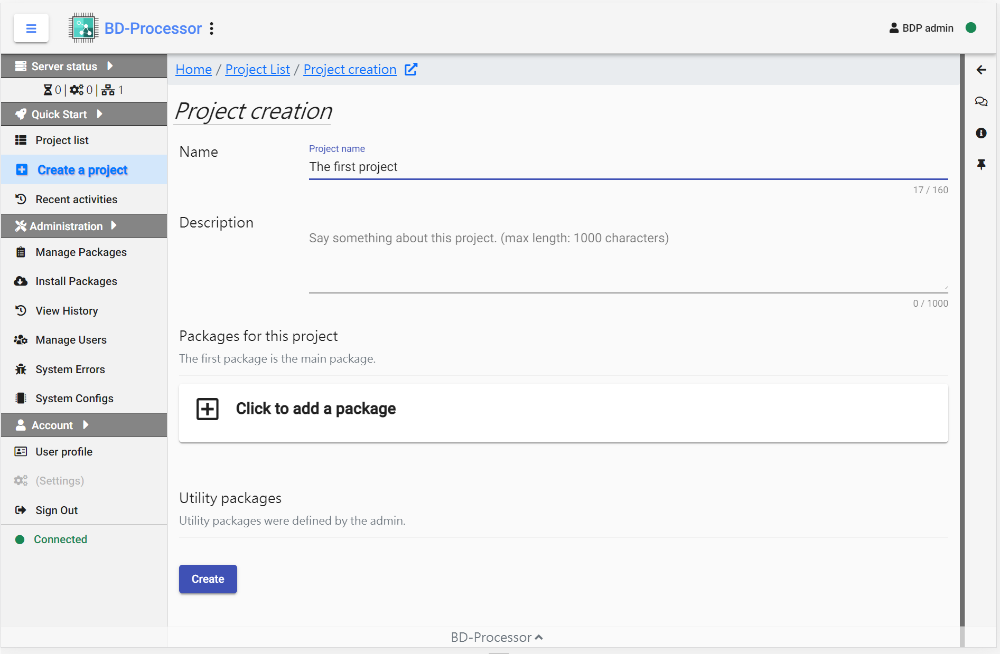{kind=link}
We have to fill the project name to create the project. The project description is optional and can be edited latter. Then, we click the Click to add a package button and a dialog pops-up as follows.
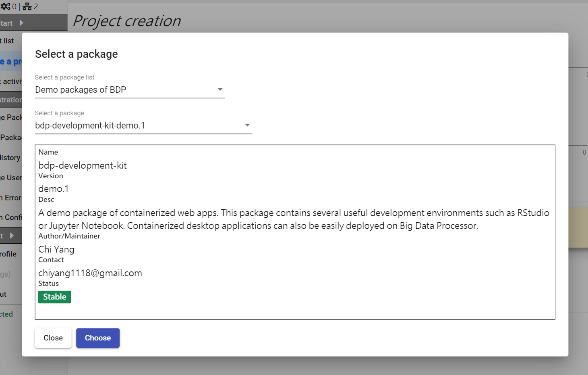{kind=link}
After choosing the bdp-development-kit-demo.1 package in this created project, click the Create button to create the project. The project information page is displayed as follows.
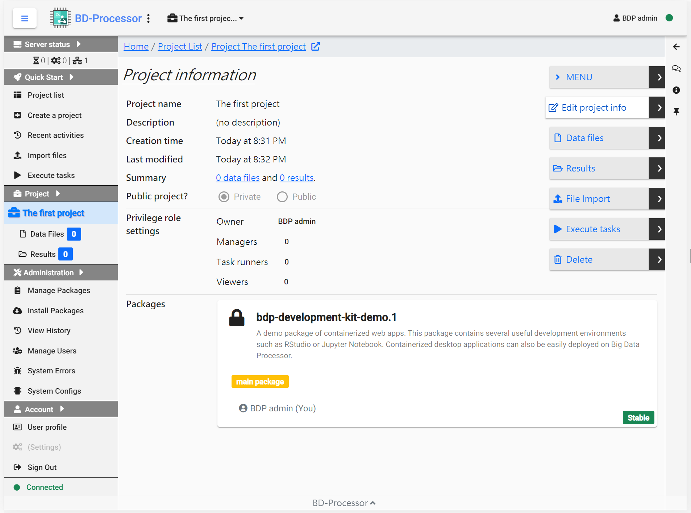{kind=link}
You may edit the project information or add/delete packages in this package by click the Edit project info button on the right-side menu (see above figure).
5. Import files and execute a task¶
Next, lets run some tasks defined in the bdp-development-kit package. On the Quick Start seciton of the left navigation panel, you can see the two links: Import files and Execute tasks. With the former Import files link, You may create DataFile record by uploading files, creating empty folders, and import files/folders that already existed on the server.
5.1 Choose a task¶
In this getting-started guide, we use the latter Execute tasks link and select a task first. As shown in the following figure, there are four steps to execute a Task/Workflow: 1) choose a task, 2) set parameters, 3) fill result information, 4) confirm to submit the task.
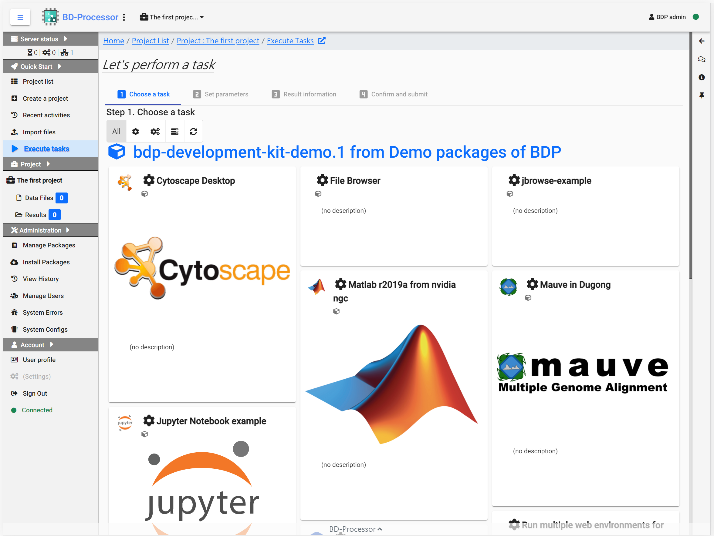{kind=link}
Here, select the Jupyter Notebook example first by click the task card. You may also select other tasks in this package later. Then, click the Next button to proceed to step 2.
5.2 Set parameters¶
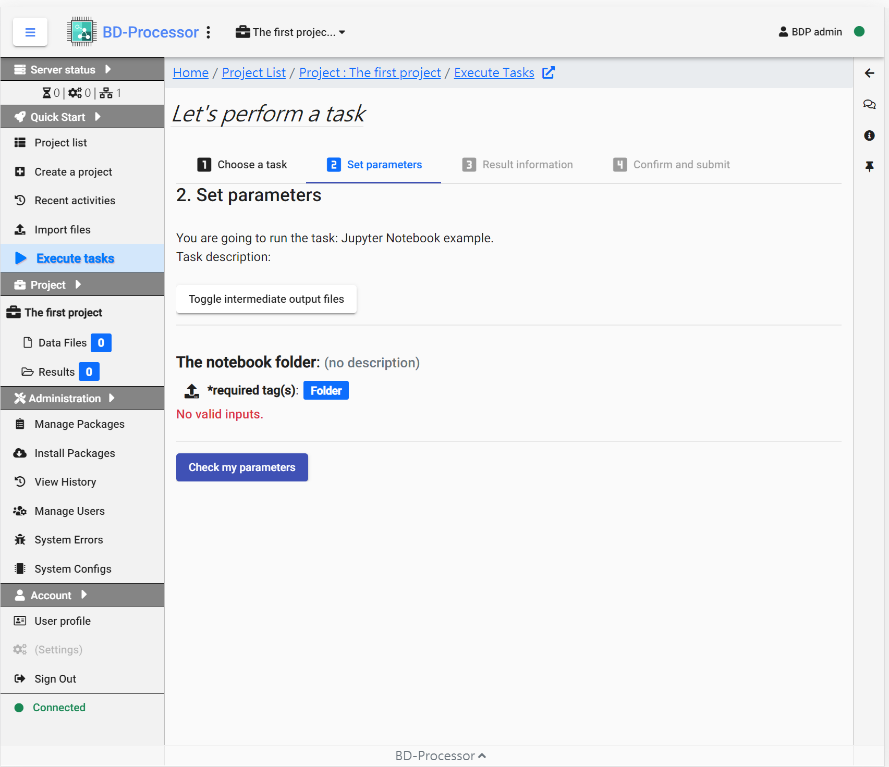{kind=link}
As shown in the above figure, this Jupyter Notebook task requires one parameter of a DataFile record with one Folder tag. This task was defined to link the DataFile record, which is a folder, to the Jupyter Notebook. We don’t have one valid DataFile record, so we can create one DataFile record by clicking the button under the parameter name The notebook folder. Then, a popup modal window will be shown as the following figure. The content of the popup is the same as the page from the Import file link. Since the specification of each parameter is known, some required information, such as the tags and the file format, will be filled in this popup window.
In this case, the required DataFile record is a folder (the “Folder” will be tagged for all folders by BDP system), so a folder is expected to be created. The BDP system used the DataFile tags to prevent user from selecting wrong files. The tag format is a-z, 0-9, hypen and underline. Multiple tags can be assigned to one DataFile records. Also, when building workflows, tags of output DataFile records must be satisfied to be assigned as inputs of latter tasks. You may see tags as a foolproof.
As shown in the following figure, We filled the name of “My workspace” for the created Folder record and added an additional “workspace” tag. Then, click the Add an empty folder button to create the folder. Newly created DataFile records will be listed below. You may edit the metadata information for these records and remember to click the button. Also, you may create multiple DataFile records via this popup window.
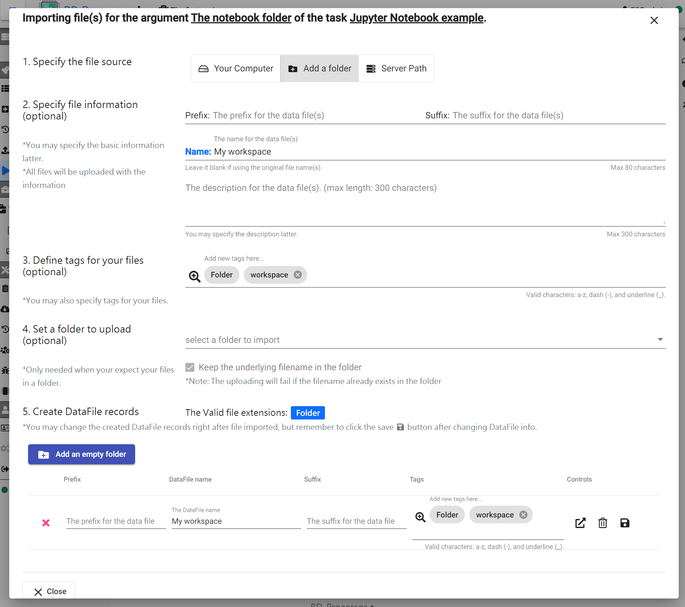{kind=link}
Once the desired record is created, click the Close button and you should see the newly created DataFile record. Click the DataFile record to set as the parameter, and click the Check my parameters button to proceed to the step 3.
5.3 Specify Result information¶
Each task execution generates one Result record. The step 3 is to specify the desired Result information. As shown in the following figure, you may specify the prefix/suffix for the Result name and the description for the Result record.
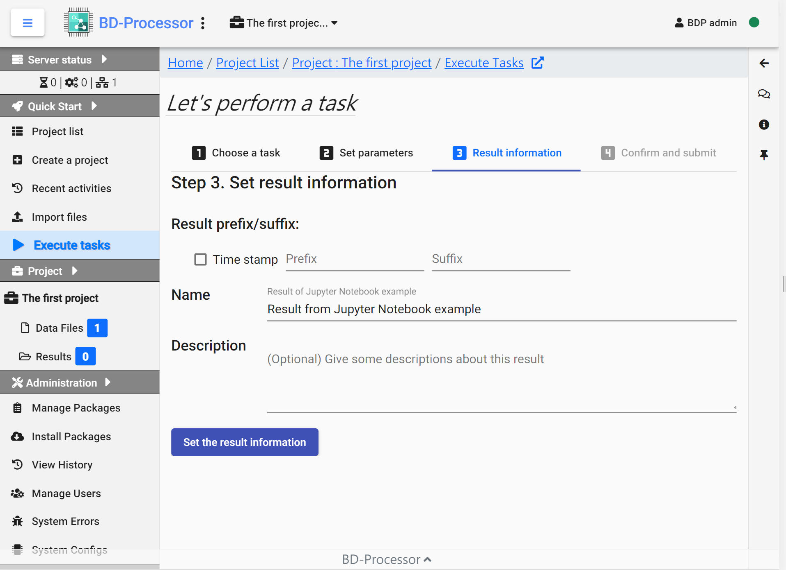{kind=link}
In addition, if the task has output DataFile records, we can specify the metadata information for each of the output DataFile records. Since the Jupyter Notebook task was defined to have no outputs, we only need to specify the metadata for the Result record. For convenience, the Result name is pre-specified and you may modify for your preference. Once all set, click the Set result information button to the step 4.
5.4 Confirm and submit the task¶
The step 4 shows you a preview for the Result record as follows.
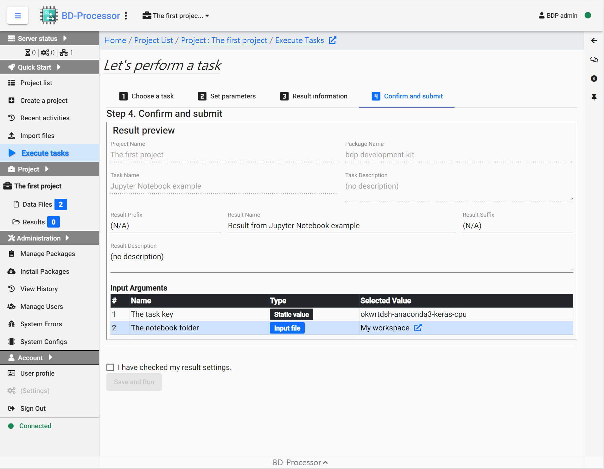{kind=link}
After checking the I have checked my result settings checkbox, the below Save and Run button is able to be clicked. That is all the task execution procedure with BDP’s built-in page.
Note that developers can design customized web pages for users to further ease the pain to specify parameters.
6. View a result¶
After click the Save and Run button, you will be redirected to a Result information page which corresponds to the running Task. A Result information page is shown as follows.
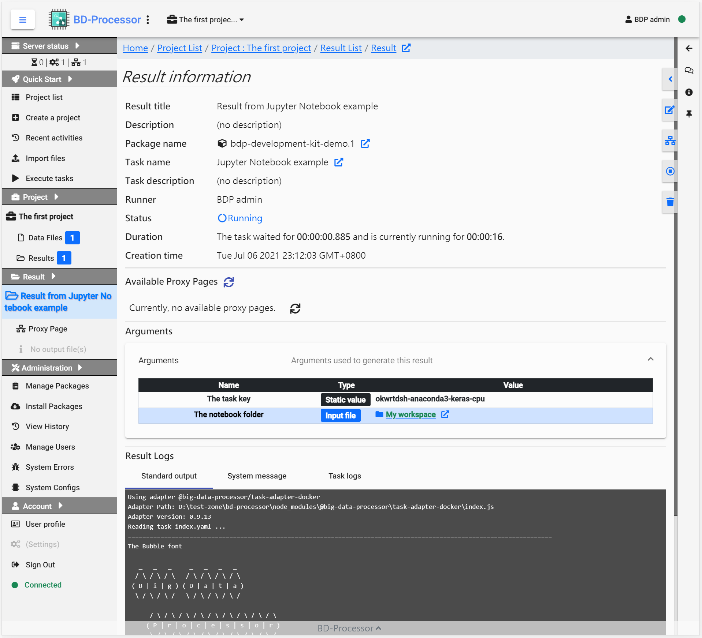{kind=link}
This page displays all the provenence of the task run, including the input arguments, running time, and logs. Since we executed the Jupyter Notebook task and it was defined to provide a web service through BDP proxy, you will see a section of Available Proxy Pages in the Result information. You may click the icon to retrieve updates. It should be soon that there is one available proxy page. The link button looks as follows.
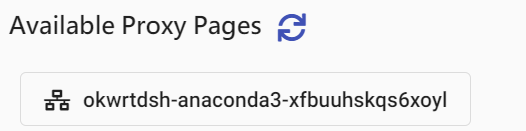{kind=link}
Note that sometimes we have to wait for the web services to start, or wait for the docker to pull the image. You may often need to wait until you see the logs indicating started web services. In this Jupyter Notebook case, we need to wait until seeing the following content to click the proxy page.
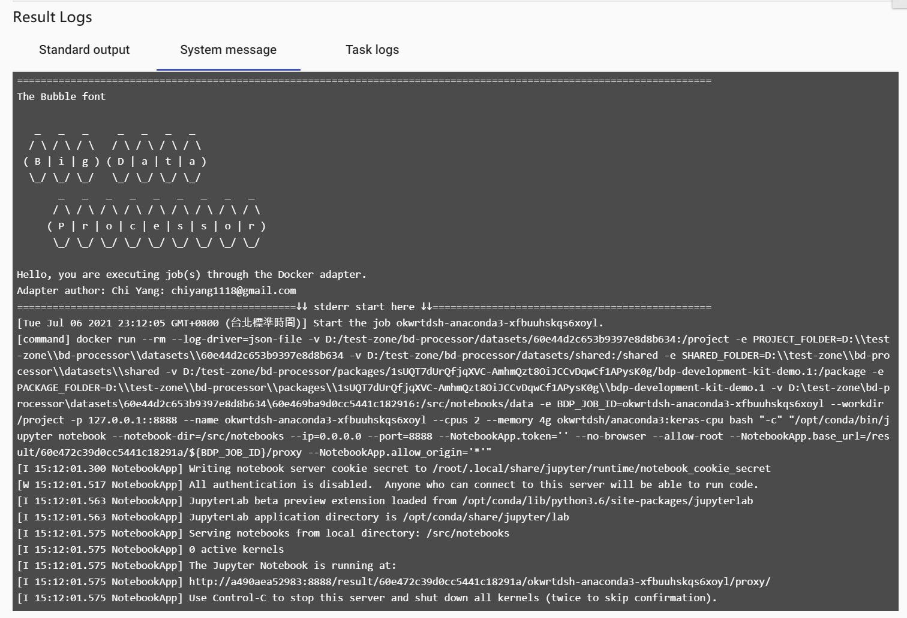{kind=link}
Finally, after click the proxy page link, a Jupyter Notebook is ready to use.
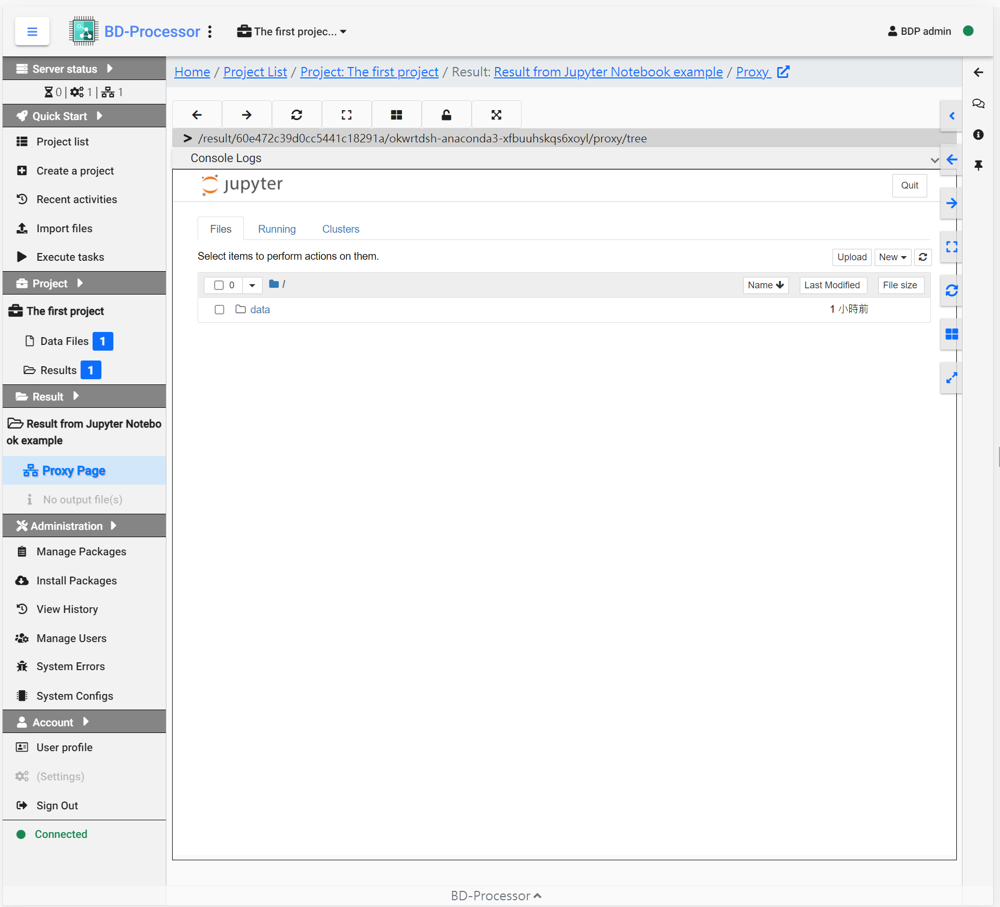{kind=link}
Note
The proxy page is run in the Page component. You may click the or to make the Page component displayed as full page. All BDP user interface is then hidden behind.
From the user perspective, this getting-started guide walkthrough the steps from configuring systems, installing packages, creating projects, executing tasks, and viewing results. You might want to try other packages.
If you installed the bdp-mirna-profiler package and included this package into a project, you may also view our customized pages as follows.
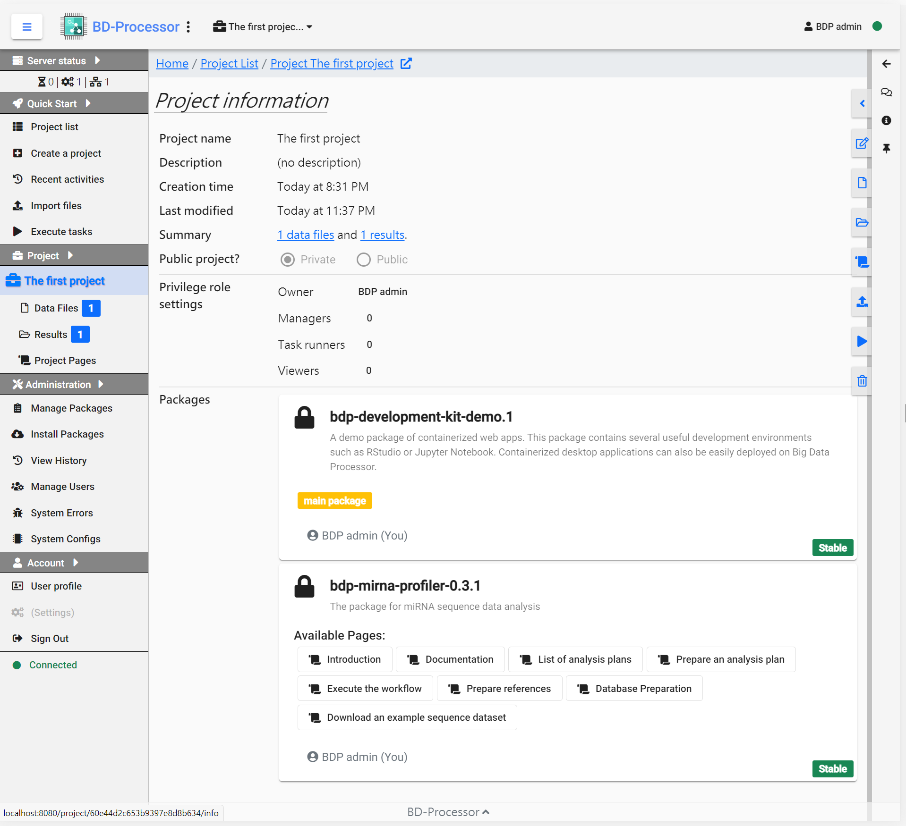 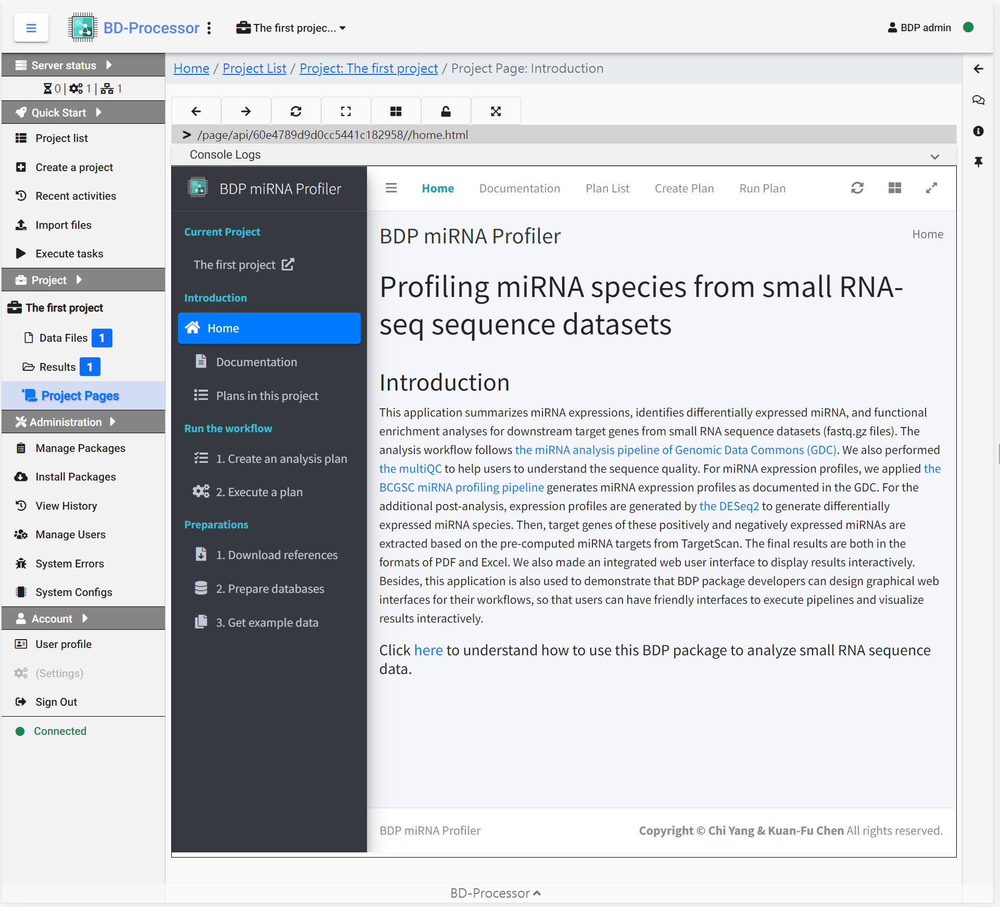{kind=link}
{kind=link}
With BDP, workflow developers can make more friendly web interface for users, and the user experience can be just like using a traditional web service applications!